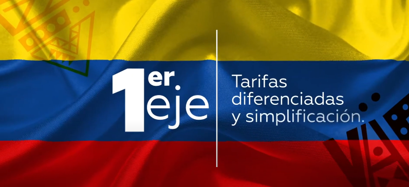
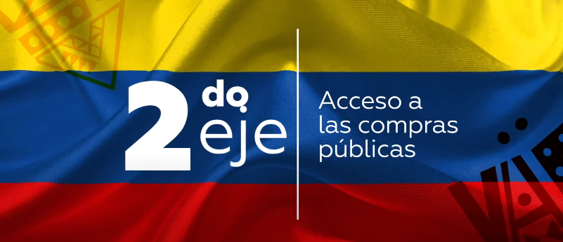

Este eje busca que iniciar un negocio sea más accesible y económico. Incluye la reducción y simplificación de trámites y la oferta de tarifas diferenciadas, especialmente para las micro, pequeñas y medianas empresas (Mipymes). Por ejemplo, el INVIMA, que regula productos de consumo en Colombia, ofrece descuentos en sus tarifas para Mipymes y exepciones para microempresas.
También se ha creado una “caja de arena” o sandbox, un espacio controlado donde los emprendedores pueden probar modelos de negocio innovadores sin enfrentarse de inmediato a todas las regulaciones. Esto fomenta la experimentación y permite ajustar el modelo antes de pasar a un entorno completamente regulado. Estas medidas buscan reducir costos y barreras iniciales, impulsando la creación y el crecimiento de negocios innovadores.

Este eje busca facilitar que las pequeñas empresas (Mipymes) puedan venderle al gobierno. Para lograrlo, se eliminan barreras y se simplifican los trámites en los procesos de contratación pública. Esto ayuda a las Mipymes a participar en las licitaciones del Estado sin enfrentar procedimientos complicados, permitiéndoles competir en el mercado público.
Este eje se enfoca en mejorar el acceso al financiamiento para los emprendedores. Se están implementando estrategias con el Fondo Nacional de Garantías para ampliar las opciones de productos y servicios financieros, permitiendo a las pequeñas empresas acceder a fuentes de financiamiento distintas al crédito tradicional. Incluye nuevas alternativas como capital de riesgo y plataformas de inversión, facilitando que los emprendedores obtengan los recursos necesarios para hacer crecer sus negocios, especialmente en proyectos innovadores o de alto impacto.
Este eje busca organizar y simplificar los recursos públicos disponibles para los emprendedores en Colombia. Actualmente, el apoyo está distribuido entre más de 100 instrumentos de diversas entidades gubernamentales, lo que puede ser complicado de manejar para quienes desean iniciar o expandir su negocio. Por ello, la ley propone que Impulsa Colombia se encargue de coordinar y centralizar todos estos servicios, permitiendo a los emprendedores acceder fácilmente a todo lo necesario, desde financiamiento hasta asesoría técnica, sin recorrer múltiples instituciones.
Además, se crearán fondos territoriales temporales para apoyar a los emprendedores de distintas regiones del país, especialmente en zonas con menos acceso a recursos. También se establecerán programas de financiamiento con ICETEX, ofreciendo créditos especiales para facilitar el inicio y crecimiento de los negocios.
Este eje se centra en educar y desarrollar habilidades emprendedoras desde los primeros niveles educativos hasta la educación superior. El objetivo es fomentar una cultura emprendedora en los jóvenes, incorporando cursos de emprendimiento en colegios y universidades. También se formarán consultorios empresariales para apoyar a los emprendedores en la creación y gestión de sus negocios, brindándoles asesoramiento práctico. El SENA ofrecerá formación en áreas clave como finanzas y acceso a mercados, y capacitará a los docentes para enseñar estos temas de manera efectiva.